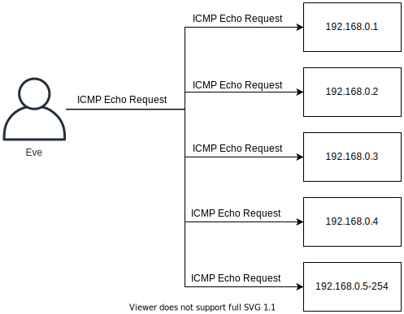
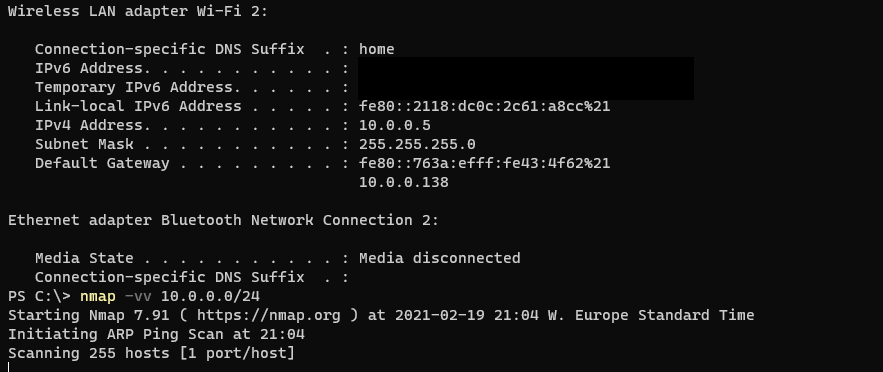

If we are to defend, we first need to know what to defend. Asset Management often relies on Network Mapping to identify which systems are live on a network.
Asset management and knowing what you expose on the network, including which services are hosted is very important for anyone looking to defend their network.
Nmap - The Network Mapper
Nmap has for a long time been considered as the standard port scanner for both network engineers and security professionals. We can use it to discover assets to attack or defend.
Network Mapping
One way to identify hosts which are active on the network is to send a ping, i.e. ICMP Echo Request, to all IP Addresses in the network. This is often referred to as a Ping Sweep.
This approach is not very good in discovering assets. It is likely that systems on the network will ignore incoming pings, perhaps due to a Firewall blocking them or because of a Host-Based Firewall. A host-based firewall is simply a firewall which is implemented on the system instead of on the network.
A better approach involves sending a different kinds of packets to a system to try ask for any kind of answer to determine if system is alive or not. For example Nmap will send the following packets to the system to try cause a response:
- ICMP Echo Request
- TCP SYN packet to port 443
- TCP ACK packet to port 80
- ICMP Timestamp request
Based on the TCP specifications, that is the rules of communications, a system should always engage in a three-way handshake before starting to communicate. Nmap seems to be intentionally breaking the rules with the packets above. Can you spot which packet is not behaving as systems would expect?
Sending a TCP ACK packet to port 80 is not conforming to the rules of the TCP standard. Nmap does this specifically to try cause the target system to make a reply. In order to send packets which are not following the rules, Nmap must run with the highest level of privileges, e.g. root or local administrator. Most port scanners will be more accurate because of this.
Disabling the Network Mapping can be done with Nmap with the -Pn flag. Nmap will now consider all IP/systems to be up and go directly to port scanning.
Try this at home now if you would like to. Careful, if you are at a corporate environment, always get permission before you start running scanners as you do not want to violate any rules of your workspace. To try Nmap now, follow these simple steps:
- Go download Nmap at https://nmap.org. Make sure you download the version that matches your operating system
- Install Nmap and launch the tool from a command line terminal
- Find your local IP address and subnet
- Run Nmap to scan it to see what kinds of systems it can discover: nmap -vv IP/netmask
We are adding two -v flag to tell Nmap we want verbose output, that makes the scan more fun to watch while it completes.
ARP Scan
The ARP protocol is contained within a LAN, but if the hosts you need to discover is on the LAN we could use this protocol to try reveal systems on the network. By simply iterating over all available IP addresses on the LAN network with the ARP protocol, we are trying to force systems to reply.
The scan looks like this:
Eve: Please Provide Mac Address of system 192.168.0.1
Eve: Please Provide Mac Address of system 192.168.0.2
Eve: Please Provide Mac Address of system 192.168.0.3
Eve: Please Provide Mac Address of system 192.168.0.4
Eve: Please Provide Mac Address of system 192.168.0.5-254
Default Gateway: 192.168.0.1 is me and my MAC Address is AA:BB:CC:12:34:56
Bob: 192.168.0.3 is me and my MAC Address is: BB:CC:DD:12:34:56
Alice: 192.168.0.4 is me and my MAC Address is: CC:DD:EE:12:34:56
Note: ARP Scanning is a simple and effective way to find hosts on the LAN, but not outside of the LAN.
Port Scanning
Port Scanning is done to try determine which services we can connect to. Each listening service provides attack surface which could potentially be abused by attackers. As such it is important to learn which ports are open.
Attackers are interested in knowing which applications are listening on the network. These applications represent opportunities for attackers. There might be vulnerabilities enabling them to attack successfully the organization.
Port Scanning works by sending packets to an application and looking for any replies. This is exceptionally easy for TCP, as if a TCP service is available it will always reply with a SYN/ACK packet. For UDP however it is more difficult. In order to detect if the service is available or not, in most cases the attacker must send specific input which forces the application to reply. Most applications hosted in UDP will not reply unless the Clients sends exactly the input required to engage in communications.
TCP Port Scanning
TCP is an easy protocol to scan because the TCP standard dictates that systems should reply with a SYN/ACK when receiving a SYN. We can send a SYN packet to all 65536 ports and record all SYN/ACK's coming back and conclude the ports which are opened based on the reply of a SYN/ACK. When no reply is received, we can assume the port is closed or filtered by for example a Firewall.

With the SYN/ACK on port 445 we have identified the port is open.
UDP Port Scanning
With UDP it is harder to determine if a port is up or not. For UDP ports the scanner can not rely on a SYN/ACK. In fact, the scanner must almost always rely on making the service listening cause some sort of reply.
With so many ports potentially open and different services only replying to the correct kind of data, it becomes time consuming and hard to scan all ports in a reasonable time.
Consider the following conversation where Eve tries to figure out if a UPD port is open:

Eve need to talk the correct protocol, and make sure the packets reach their destination, e.g. no packet loss. Otherwise Eve might not discover the port is open.
Because of this UDP scanning can be very time consuming if we want to scan all ports.
Useful Nmap Scan Types and Options
There are many scanners out there, however in this section we focus on how to utilize Nmap to the full potential.
Nmap can be told to scan the most common ports with the argument --top-ports.
nmap --top-ports 100 target
The scanner can try determine versions of the application listening behind a port. This is called service scanning and can be enabled with the -sV flag.
nmap -sV target
Nmap has many built-in scripts designed to target a specific service and interact with it. Scripts can do all sorts of things like pull out information from the service or try to exploit it. We can enable the script scanner with the -sC flag. This enables only safe checks, as such no denial of service or exploitation attempts.
nmap -sC target
Operating System detection can be done with the scanner, allowing it to try determine which operating system is running. It uses many different parameters to try measure and estimate the likelihood of what operating system it is. This can be enabled with the -O argument.
nmap -O target
The aggressive mode of Nmap enables many flags at once. The scanner will do version and OS detection, enable the script scanner and scan the top 1000 most common ports. It can be enabled wit the -A option.
nmap -A target
Nmap can also scan IPv6 across all of the above flags. It is enabled by adding the -6 flag.
nmap -6 target
Note: The best way to understand is to practice and get hands on experience. Go ahead and download Nmap and try these different scans against systems in your own environment!
Nmap Timing options
Scanning can be done with different speeds. Slower speeds have a less likelihood to be detected by IDS systems, while a fast scan might overwhelm the system. Nmap supports the following options:
- T0 - Paranoid. This option is for attackers whom do not want to be detected. IDS systems can correlate multiple requests within a certain timespan. The paranoid option will try to circumvent this by only sending very few packets per second.
- T1 - Sneaky. Faster but designed to evade IDS systems.
- T2 - Polite. Slow scan doing its best job not to crash a system.
- T3 - Normal. It's simply the default.
- T4 - Aggressive. Fast scan which gives results fast. Most systems can cope with this.
- T5 - Insane. We are sending at full capacity and performance.
Zenmap
Nmap has a built-in GUI ("Graphical User Interface") a long side with other tools too. The GUI can be useful to visualize networks and browse open ports across different hosts. The GUI looks like this: